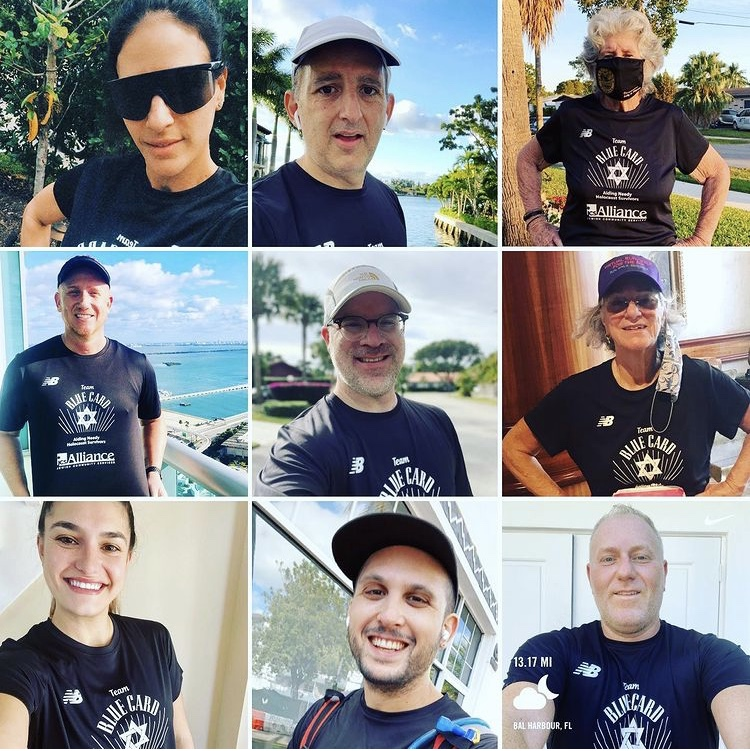
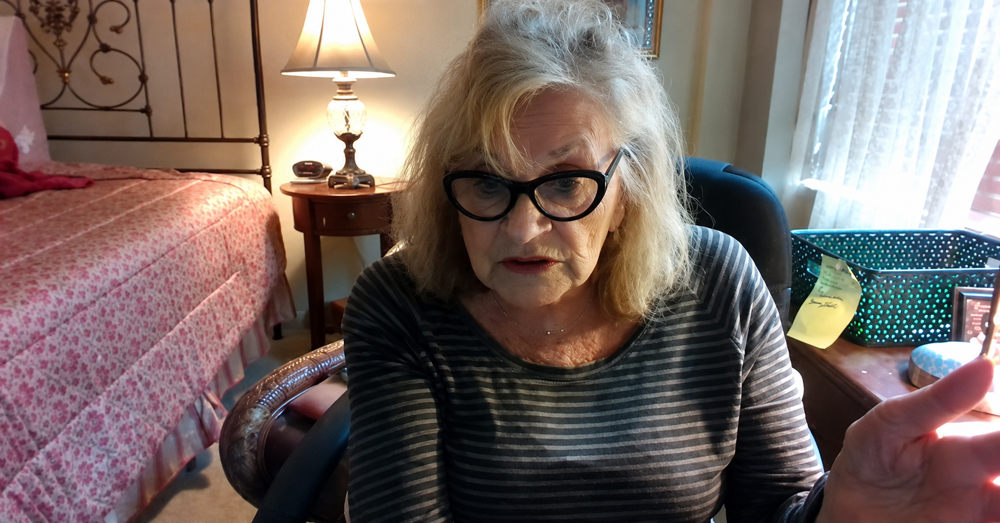
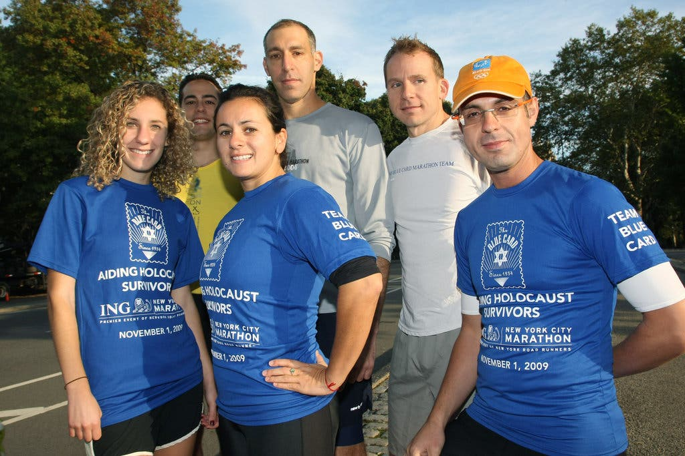

Blog
Stories, updates, and community news from The Blue Card.

2025/10/15 at 5:52 am
Israeli Hostages Released Reactions from Holocaust Survivors

2025/05/14 at 2:17 pm
The Times of Israel – La mémoire de la Shoah, quand les derniers survivants auront disparu

2025/05/14 at 2:12 pm
fr.news.Yahoo.com – La mémoire de la Shoah, quand les derniers survivants auront disparu
2025/05/14 at 2:07 pm
Fear Of Forgetting: What Happens When Last Holocaust Survivors Are Gone?
2024/10/07 at 11:56 am
Holocaust Survivors Post October 7 th by Masha Pearl

2022/03/08 at 4:53 pm
The Blue Card – Assistance for Holocaust Survivors in Ukraine
2021/11/28 at 7:55 pm
Hanukkah at The Blue Card
2021/11/02 at 3:59 pm
This student from Montreal is running the New York City Marathon to honour Holocaust survivors
2021/10/21 at 2:30 pm
Famous Chef Delivers Meals to Holocaust Survivors During Pandemic

2021/06/16 at 9:21 am
SeniorsMobility.org - A website created to help Seniors stay fit and healthy!

2021/04/05 at 1:49 pm
YOM HASHOAH 2021 Events Newsletter
2021/02/26 at 2:30 pm
In Memory of Leo Rechter
2021/02/16 at 5:21 pm
Holocaust survivor Goldie thanking The Blue Card for financial assistance

2021/02/15 at 4:15 am
Amazon Smile – Help The Blue Card while you shop!

2021/02/02 at 4:25 pm
An Amazing Virtual Miami Marathon 2021!!

2020/11/23 at 5:35 pm
Today is the anniversary of Kristallnacht, “Night of Broken Glass”
2020/10/19 at 2:01 pm
Masha Pearl, Dedicated To Helping Holocaust Survivors
2020/10/19 at 1:58 pm
Blue Card supports Holocaust survivors during the pandemic
2020/09/30 at 9:00 am
The Blue Card honors the late Nobel Laureate Elie Wiesel at their 2015 Benefit Gala
2020/09/23 at 3:16 pm
Being Great at Doing Good – Miami Shoot Magazine

2020/09/15 at 4:09 pm
Here’s How Virtual Gatherings Are Helping
2020/09/14 at 7:11 pm
Holocaust survivors reflect on coronavirus isolation

2010/10/21 at 9:51 pm